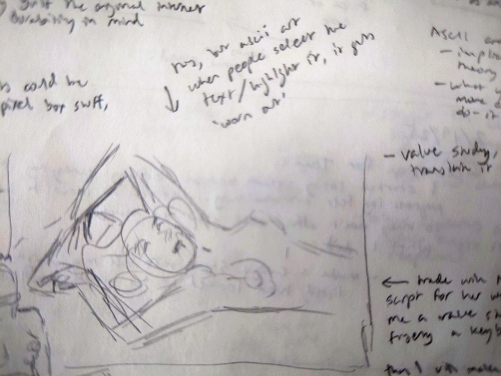
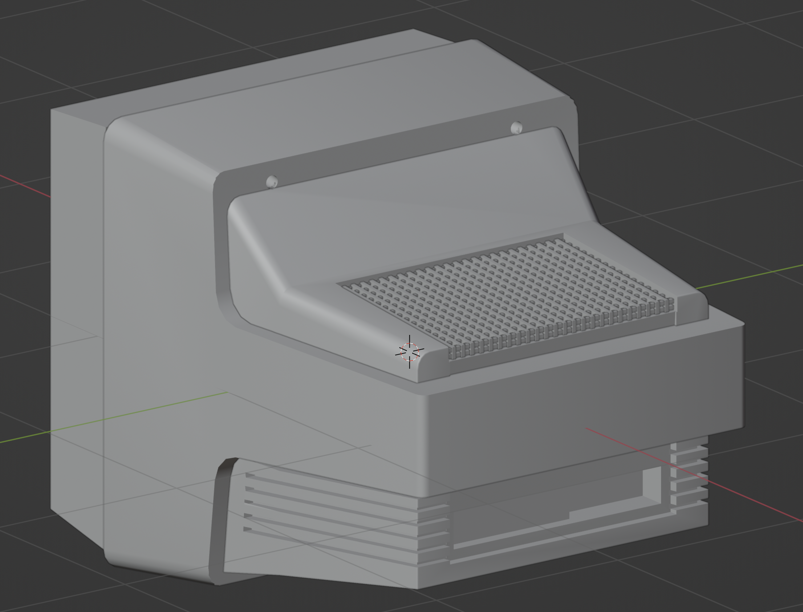

Wear & Tear Website
Preserving the Oldest Porn on the Internet for Future Generations
You can touch objects in museums.
Museum staff hate it, but it's usually possible.
The reason not to touch museum objects is because nobody wants to go to a museum to see dust that used to be museum objects. Also, if museum staff catch you, you are in trouble. So there are a few consequences.
Why porn? (see title ^)
On the internet, you can touch anything you want. You're anonymous. But there can still be consequences, if someone designs them.
A Worn Out Website
For my first project in cousin bootcamp, I spent two months wrestling with <canvas> to make a very short game of keepaway. For my second project, I think a website that visibly wears out as people use it would be really cool. Also totally useless from a product perspective, but I want something simple to learn fullstack development on and I like making cool things, not viable products that people want.
But what can I put on this website to get enough traffic to wear it out?
Generating the art
I want this page to be plausible historical fiction, and the page is all about this one image, so I needed excellent art. This rules out AI images, and here's why:
- Using an AI-flavored image would be a dead giveaway that it didn't come from 1992
- I enjoy prompt-wrestling LLMs, but prompt-wrestling image generators takes forever and I hate it
- Finding and running a rando uncensored model is unhygenic
- Artists would know I did, and I would be ashamed
- I want a sexy, tongue-in-cheek, campy, plausible image
- I could just draw it myself
It's been a long time since I shaded anything or actually tried to get anatomy right, but I'm willing to suffer for art. I did a very preliminary sketch...
And didn't have to go any further because my professional artist friend happened to ask for some custom javascript on her comic Squarespace and was willing to paint something funny, sexy, and believable in exchange.
So yeah, we can call that "generating the art", if we want to be gross about it.
Why ASCII? (WIP - just thoughts)
- One mode of UX is explicit provocation ("do this")... but what's happening when using a site feels intuitive is implicit provocation. Tutorial vs. learning through experience in games.
- Everyday Design book, desire paths
- Natural human impulse to recoil when someone tells you what to do
- Recoil when someone wants something from you, wants you to behave yourself a certain way.
- Jokes as UX: a paywall is a knock knock joke. Using your bank site is like standup, you've come for the purpose of UX.
- Deadpan UX
- Throwaway UX. The most critical part of a throwaway joke is that it has to look effortless. Also be funny, but if it asks for attention, then it's not a throwaway. All easter eggs are throwaway UX.
Resource Management (WIP - just thoughts)
In this section I want to talk about the argument against easter eggs/throwaway design. If it's not explicit, it can't be clear to users what they should do.
But that's kind of the point. They should do what they feel like doing, and when they do it, and they discover that someone has anticipated their action, that's a weird but meaningful sort of asynchronous connection. It's like, you're a weirdo but so are other people. Like the Charlie Kaufman talk where he says "by being vulnerable, maybe other people will see themselves in me and won't feel so alone."
- Throwaways have to look effortless. But they do take effort. Making something takes time, and usually that means you make one thing instead of making another.
- Throwaways don't call attention to themselves, but because of that they can surprise and delight you when you happen to do the thing that triggers them. But because you're not explicitly directing people towards triggering it, you can't rely on people triggering it.
- This page shouldn't be a waste of time never trigger the curator.
- It's like music - the main tune has to be solid without all the arrangements around it. I don't know anything about music but I imagine this is true.
- Systems can lower the opportunity cost of making throwaways/easter eggs by making them quicker and easier to do.
- Explain curator engine/CMS.
Disorganized Chronological Journal
Part I. Setup: 4/1/25
What I did tonight: I figured out what the project journal will look like. When I think about the early internet, I remember how loud things like modems and printers were. Modem songs have had a renaissance in the modern era, probably because they sound nice, but continuous feed dot matrix printers were 45x as loud and I think that deserves some acknowledgement.
I picked Comic Sans and Impact because they also feel real old.
Here's what inline code will look like.
print("hello world")
print("this is how code blocks will be styled")
print("it took multiple hours to make this in css")
print("and I have no plans to use this in the actual project...")
print("actually it could be cool as the donations leaderboard?")
Tomorrow maybe I'll work on making a monitor in CSS.
I also did a bunch of work on the narrative here on this page.
The Museum Part 4/3/25
Ok, so part of this project is the museum that contains the historical piece of porn. What should it look like?
Well, museums are always white, empty, clean looking. So a white background obviously. But what about typefaces and design?
I looked at a few of museums for reference. Museums don't really do drop shadows.

Moma PS1 is the most recent museum I went to. Their website is too hip for what I want.
The Computer History museum in Mountain View is a museum I've never been to, but I did drive past it a lot. This design is great for a museum that is in an office park but I want museum-museum aesthetic.


The MUseum for Digital Art was in Zürich and I liked going there when I was on work trips. I like how empty and clean the page is.

Museum für Gestaltung has more elements to borrow from. And I also liked going there on work trips to Zürich.
Analyzing Museum für Gestaltung design
Ok. I like that it's only one font, all I have to do is figure out how they're using it. So what is going on here?

Reference from the Museum für Gestaltung site. The font is Riforma Museum in 300 and 800 weight. But I want to use a Google font.

Poppins is pretty close, but the G and a are modern shapes instead of old timey.

Jost is also close, the a is the right level of modern, but the M looks drunk or woozy or something. Not respectable and museumlike.

This is a nice match. The G and a are classic, the M is upright and has a low middle, and although the umlauts are round instead of square, I can live with that because there are no umlauts in "Institute of Internet Pornography."
Testing out Wix Madefor Text on copy from the Museum für Gestaltung site:
Institute
of Internet Pornography
Accessible and inclusive
For students and trainees, the museum offers a versatile learning and experimentation platform on current design topics.
More styling 4/4/25
Ok so how to do the little chip buttons.
Then when you click it, the reference one goes grey in a nice way, but I made mine go blue-screen-of-death in a nice way instead.
I copied how the button works from the museum page with CSS transition. It's also a fake button, not an actual button, so it's just a styled div using pseudo-class and media triggers. I didn't know what pseudo-class and media triggers were before tonight! I used to just copy and paste them! :D
.button {
cursor: pointer;
border-radius: 999px;
border: 1px solid black;
width: fit-content;
padding: 9px 17px 12px 17px;
font-family: "Wix Madefor Text", sans-serif;
font-optical-sizing: auto;
font-weight: 100;
font-size: 14pt;
font-style: normal;
-webkit-user-select: none; /* Safari */
-ms-user-select: none; /* IE 10 and IE 11 */
user-select: none; /* Standard syntax */
}
.button:active {
transition: all 0.2s ease-out allow-discrete;
background-color: rgb(0, 0, 255);
color: #ebebff;
border-color: rgb(0, 0, 255);
}
@media (max-width: 768px) {
.button {
transition: all 0.2s ease-out allow-discrete;
font-size: 12pt;
padding: 9px 15px 11px 15px;
}
}
@media (min-width: 769px) {
.button {
transition: all 0.2s ease-out allow-discrete;
font-size: 14pt;
padding: 9px 17px 12px 17px;
}
}
a {
text-decoration: none;
}
a:link{
color: black;
}
a:visited{
color:black;
}
.button a:active {
color: white;
transition: all 0.2s ease-out allow-discrete;
}
I also did a cute little thing for links that are in paragraphs, it turns a color when you hover on it: Google
I also found out how to justify text and hyphenate in CSS! Because the museum had multiple words hyphenated which is a weird choice to hardcode, so I thought it had to be a CSS thing. Hyphenating words on the web also feels like a funny choice to me, but justified text looks better and it does make a webpage feel more like high-quality printed material. Apparently you can even put invisible hyphens in your words so the CSS doesn't break them up in weird places!?
body {
font-family: "Comic Sans MS", "Comic Sans", cursive;
font-size: 11pt;
text-align: justify;
hyphens: auto;
}
4/22/25 - back to it
Ok it's been a minute since I worked on this. The triumph of getting a database on Neon and the page on Fly.io was so incredible that I just coasted on that for two weeks. I still don't super understand databases but I do understand now the relationship of where the backend lives, where the database lives, and how the backend uses an ORM to talk to the database. I think that because I only ever hacked together databases locally, I was struggling to understand how they could exist alongside the backend, or didn't understand that they could exist elsewhere? Like many things with coding, it's kind of hard to grasp what it was exactly that made the concept incomprehensible two weeks ago.
I took today off work to focus on getting some momentum on the project again. I'm going to start with getting this goofy little thing where ascii naughty bits float around when you click on the title of the gallery page.
Before starting on it, here is how I think I'll approach it:
- Use codepen so the code isn't tangled with anything else
- Focus on getting the movement right first
- Use CSS absolute position instead of canvas elements
- The goal behavior is for an ascii bit to appear, float around, and fade away.
Except yay it seems like codepen is down or my internet is down. So doing it locally instead.
- Realizing that I need to make a frame counter for when to move the css elements.
- As I'm working on it, ChatGPT is annoyingly giving me event properties that are not accurate (like event.clickX and event.clickY) but I switched to clientX clientY by looking at console.log(event)
- Well, that took a long time. I ran into problems where I was asking ChatGPT for "floaty animation" and it was giving me weird equations that looked terrible. Eventually I dug around on my own and figured out that what I wanted was each object to follow its own sine wave.
I'm still not totally happy with the motion but this isn't even a critical piece of the project anyway. Time well spent? >:( ALSO UGH IT WON'T WORK HERE ON THE JOURNAL PAGE probably because of position: absolute... so frustrating. I'll have to go back and clean it up sometime later because I AM FRUSTRATED NOW
OK I figured it out. Here was the problem:
window.onload = function() {
mainTitle = document.getElementById("logo-title");
console.log(mainTitle);
if (mainTitle) {
floaties = new Floaties(mainTitle);
mainTitle.onclick = function(event) {
const x = event.clientX;
const y = event.clientY;
floaties.makeFloatie(x, y);
}
}
}
Yeah so clientX/clientY attributes of event was the problem. Once I switched those out for pageX/pageY, it worked.
4/26/25 - Making the website, Craigslist Edition
When I talked with Tom this week, he said I should start from scratch and make a Craigslist edition of the website, for practice. Like start from scratch and make a bun project, make a database, deploy it.
So here's what I'm doing. Starting at abuot 3pm:
- Made a new directory in my local code folder.
git init'd it. - I like command line interfaces more than GUIs because with a cli, you can only see the complexity that you currently understand. Like if I'm in the cli, I don't know there's a verbose mode until I need it or copy/paste it from somewhere else. In a GUI, all your options are visible and I have a hard time figuring out what's the most important thing to pay attention to.
- Anyway. Ok next step is starting my bun project. I'm going to try to do this without checking my notes from Tom before figuring out the next step.
- Ok so I'm going through
bun addone by one and looking up each package on npm. After looking at thebun adddocumentation that seems to say it's the same thing as npm. - Now I have added Drizzle ORM, EJS, dotenv, and PostgreSQL to my project. One at a time. While understanding what I'm doing though! :D
- I retyped everything over from Tom's bun server example's
src/server.tsand I understand how it's working better. Also, I was reading up on async stuff in javascript the past couple of days, which helped understanding the async await stuff. I used Neovim to retype everything and I have autocomplete turned off, which was a lot of typing. My hand hurts now.
It's about 4:30 pm. So I worked for about an hour and a half? I'm going to delete everything and start again from scratch maybe tomorrow morning?
For now, I'm switching over to plan out on paper what the craigslist edition needs to have.
5/14/25 - Making javascript basics for Craigslist edition
Today I'm going to spend a couple of hours on making the minimal javascript that I'll need in order to make the craigslist version of the site work. That is:
- Popup dialog function (show dialog, communicate that it's been shown to state)
- State object (for which dialog to show)
- Text selection event (for ascii text)
- Position the porn image to a good spot in the iframe (use
window.scrollTo?) - How does iframe talk to parent page?
window.parent.postMessage()probably works - Make the computer turn off (triggered by state)
So here is the popup:
I have a problem. MDN documentation on <dialog> says never ever ever make a modal dialog not closeable by ESC key. But I want to. But also, that's not very important. Anyway, here's the popup code on the HTML side:
<button id="popup">Popup</button></p>
<dialog id="dialog-popup">
<p>Do not touch the artwork!</p>
<button id="dialog-button">OK</button>
</dialog>
and on the JavaScript side:
const dialogPopup = document.getElementById("dialog-popup");
const dialogButton = document.getElementById("dialog-button");
dialogButton.addEventListener("click", function(event) {
dialogPopup.close();
});
const popupButton = document.getElementById("popup");
popupButton.addEventListener("click", function(event) {
dialogPopup.showModal();
});
On the actual project I'll probably create the popup in javascript instead of having it embedded in the page from the start. I'll probably just use one and repopulate it with different text and buttons based on what state the page is in (how irritated the curator is with you).
Here's a button that progresses through a few different messages from the curator:
Curator state: not annoyed
Here's the javascript mapped to the <button> and text element above:
// stateful curator
let curatorState = {
annoyance: 0,
dialog: {
0: "Please refrain from clicking the button; the wear and tear piles up quickly.",
1: "It is a fascinating button, but please do not touch the works in this exhibit.",
2: "Look with your eyes not your cursor THANK YOU :)",
3: "Stop clicking the button.",
4: "You don't care about ruining this historical button. You hardly deserve the privilege of seeing it.",
5: "This is your last chance to stop clicking the button. Look at the rest of the page or else.",
6: "Your button-clicking privileges have been revoked. The button is now closed for clicking."
},
state_display: {
0: "not annoyed",
1: "miffed",
2: "irritated",
3: "seriously offended",
4: "so over it",
5: "kicking you out",
6: "you have been kicked out, you have lost the privilege of clicking the historical button"
}
}
const curatorStateDisplay = document.getElementById("state-display");
const stateDialog = document.createElement('dialog');
document.body.appendChild(stateDialog);
const stateDialogButton = document.createElement('button');
stateDialogButton.innerHTML = "OK";
stateDialogButton.addEventListener("click", function(event) {
stateDialog.close();
})
const annoyCurator = document.getElementById("state");
annoyCurator.addEventListener("click", function(event) {
if (curatorState.annoyance === Object.keys(curatorState.dialog).length) {
return;
}
stateDialog.innerHTML = `<p>${curatorState.dialog[curatorState.annoyance]}</p>`;
stateDialog.appendChild(stateDialogButton);
stateDialog.showModal();
curatorStateDisplay.innerHTML = `Curator state: ${curatorState.state_display[curatorState.annoyance]}`;
curatorState.annoyance += 1;
});
In the actual project I'll have the dialog messages pulled in from a database and track more states than just the curator's annoyance.
Okay, now for the text selection event. Highlight some of the text in the smiley face below:
No text highlighted
, ; , .-'"""'-. , ; ,
\\|/ .' '. \|//
\-;-/ () () \-;-/
// ; ; \\
//__; :. .; ;__\\
`-----\'.'-.....-'.'/-----'
'.'.-.-,_.'.'
'( (..-'
'-'
Ok I was annoyed because the tag that mirrors the highlighted code isn't respecting space characters, but then I realized oops <code> tags don't do that, only <pre>s do. So here's a pre that does:
no text highlighted
Here's the code for that.
// highlight selection code
const selectDisplay = document.getElementById("select-display");
const displaySelect = document.getElementById("display-select");
const selectTarget = document.getElementById("select-target");
selectTarget.addEventListener('mouseup', () => {
const highlightedText = window.getSelection();
if (highlightedText) {
selectDisplay.innerHTML = highlightedText;
displaySelect.innerHTML = highlightedText;
}
})
There's a problem I'll need to solve in the actual project of grabbing what the actual index range selected is -- since in the ascii porn image there might be lots of different places where @@@@ would occur, so which set of 4 @'s in the huge ASCII image need to be degraded?
Oh hey the window.getSelection() object already has that stuff! Yay :D
OK what else am I working on... going down the list, the next thing is positioning the porn image in the proper place inside the iframe. I don't know whether scrollTo() should be on the <iframe> in the parent page or in the inner page on itself...:
Yeah ok, I tried both. It needs to be a script on the inner page itself.
On the first iframe there's no scrollTo(), but the second iframe's page has a script that says window.scrollTo(600, 500). In the real project page, the iframe will show more of the ASCII. It's hard to even know you're looking at a boob right now, even though it's precisely positioned to show you one.
I kind of already made the "turn off" state work with the annoyance button, so the only thing left on the list to do is to make the page inside the iframe talk to this main page. MDN documentation for postMessage says it lets a page communicate with the iframe embedded in it or lets a page communicate with a pop-up it spawned.
COOL...
Nothing selected yet
YAY I DID IT. Well OK Gemini Flash 2.0 did it, but I thought of it and read the documentation and then copied and pasted what truly appeared to be exactly the same code from Gemini when mine didn't work.
My code that didn't work:
function receiveMessage(event) {
const expectedOrigin = "*"; // make this be your domain
if (event.origin !== expectedOrigin) {
return;
}
const receivedData = event.data;
console.log(receivedData);
console.log("data received");
}
Gemini's code that does work:
const parentDisplay = document.getElementById("parent-display");
function receiveMessage(event) {
const expectedOrigin = "*"; // be very careful using this
// make this your domain
if (expectedOrigin !== "*" && event.origin !== expectedOrigin) {
console.warn("Received message from untrusted origin:", event.origin);
return; // crucial security step.
}
const receivedData = event.data;
parentDisplay.innerHTML = receivedData;
}
Ok. So that took about 3 hours to do all those. Feeling proud of myself!
After dinner same day: Blender
So I had this idea that it would be cool if the ASCII porn image is being shown on an old monitor, and then when the curator gets totally fed up, when they "close" the exhibit the monitor turns around to show just the back of it. So the monitor acts as a visual frame around the iframe.
Originally I thought it would be super sick to do it in CSS, but then I made a beige box in CSS and felt like oh jeez this is going to be a pain in the ass. In vector graphics, you assemble things in a sort of smart collage/masking way and while it's very cool, it's not the way my brain works. Maybe it's easier for people who have a mind's eye? Anyway, my first thought was CSS and then as I was realizing how insane that idea was, Tom posed the question of "what benefit would you hope to get out of doing it that way?" and yeah, honestly the only benefit is "I did an insane thing in CSS" but hey I have nothing to prove about CSS. I know how to nest and center elements and am picking up more as I go, but I don't really care about being a CSS guru.
SO the next option I was thinking of was Adobe Illustrator. But then, ugh, how the hell do you animate it? Vectors in After Effects? I remember After Effects being even less intuitive than Illustrator, because AE is vector graphics plus animation and yeah that gives me a headache.
For some reason the last option I thought of was Blender. I used to find modeling in Blender totally unintuitive, until late last year when I put a talk together for Google and wanted to have a slide of a lot of marbles going through a probability board. I couldn't find anything at all, so I did a deep dive into Blender and physics simulation and that was really cool. I made a pegboard in 2 minutes! Because there's this whole set of tools in Blender that aren't just "mirror" and moving points around!! There's stuff like Boolean Difference and Generate Arrays.
So yeah, I was like "Blender is probably the least painful option" but I still felt pretty apprehensive about starting the monitor.
The thing I find overwhelming about Blender is the part where you start from a cube and extrude/move parts of it until it looks like what you want it to look like. So what I did instead was break down the monitor I wanted to copy into big shapes that I can overlap and piece together using basic shapes and boolean cutouts. I guess it's like masking in Illustrator, but for some reason it makes more sense to me in 3d.

This is how I planned it out.
Then I looked for YouTube videos on how to model a monitor. They didn't really help though. They were all the extrude-things approach. So I switched to looking for videos about blender arrays and booleans to reassure myself that I COULD do it that way and the
WTF I must have pressed some kind of cursed shortcut key by accident because suddenly as I was writing this page VSCode started trying to autocomplete every single word I was typing. WTF. I fixed it by Googling around and adding "editor.quickSuggestions": false, to my settings json??
OK so yeah I went on Youtube to just reassure myself that boolean difference and generate arrays worked the way I remembered them working. I hadn't touched Blender for 6 months so I had to keep looking up stuff like "how to move" but after an hour or so the muscle memory kicked in again. Blender is also interesting to come back to because a big part of working with it to me is understanding what's possible in it, because if you know to google something you can always find out how to do it... the hard part is knowing that an approach is even possible and that you should google it.
anyway it took about 1 hours of YouTube and 2 hours in Blender to get it to this point:
Actually pretty excited to work more on it.
Research session - 5/19/25
So I want the timeline/museum context on the page to be factual and narratively interesting. I think what's relevant is big points in technology development towards the internet, computer graphics, and pornography. Showing how those three converge.
Maybe in three separate timelines that actually converge on this image?
I found on a r/AskHistorians thread about internet porn that porn images had been being distributed for ~5 years on BBS's before the internet even happened. So maybe that's worth addressing and clarifying that this is the first porn image on the internet, the same way natural history museums clarify "this is the first stone tool found at a definitively homo sapiens archaeological site."
I found the Hobbes Internet Timeline which says it's usable for non-commercial projects as long as there's a linkback.
Wikipedia - Internet Pornography calls out Danni's Hard Drive coded by Danni Ashe as one of the first porn sites on the actual internet.
I think it's cool that she coded the site herself to start out 💪
Lenna was the image used for benchmarking for computer graphics for a long time
Pieces of the story of why this ASCII image would be the first porn on the internet:
- Other ASCII had been posted/distributed on BBS's, but this is the first ORIGINAL porn on the internet?
- Bandwidth limitations (maybe show gif of first jpg on official internet loading in stripes to show how slow that would be, justifying why the first image is ASCII
Same session - The Curator
The two interactive parts of this site will be the crumbling ASCII and the curator's popup dialogs. But what will the popup dialogs say? To figure that out, I have to think a bit about who the curator is.
Curator character:
- Did they create the exhibit out of their own special interest?
No, I think they chose it from a slate at their job and were determined to do a good job on it.
Curator chose the specifics to present this history. - Do they care about porn?
No, only in a historical/knowledge sense. The curator is unmoved by this image, is asexual or professionally repressed. - Curator is super intellectual, they expect everyone to behave in a respectful, contained way.
- Curator likes knowledge, is proud to present knowledge and wants knowledge to be appreciated. Curator is frustrated when people focus on the “wrong” thing.
Wants to explain. Expects if people understand why it’s good to behave and be respectful, people will actually behave and be respectful. - Curator does not see the humor in the site or in the situation.
[Explain why this matters?]
Curator principles:
- The curator is not aware of humor in the situation. Total straight man.
- Messages should be able to make the user feel things, but also be funny enough to keep user antagonizing the curator. You should feel bad for the curator sometimes, but you should also want to keep doing the thing that's upsetting them.
- Messages should always be phrased so that "OK" (button text) makes sense as a response from the user.
Curator states/interaction paths:
- "First Time": professional, patient, gives benefit of the doubt.
- "You Again": accusatory, trying to make you feel bad for coming back to keep destroying the art piece.
- "High Traffic": Oh, so you've heard about it, you're here to vandalize the exhibit and make my life hell
- "Pity Party": whining about people being the worst, self-pitying
- "Confessional": vulnerable, admitting how important this exhibit was to them and now they just want it to be over, they're working on a new one about [something equally absurd that people will not take seriously, but curator has no awareness of this and takes it very seriously]
- "Appreciation": triggers if you have been here before and you DON'T damage the site for X amount of time
- "Solicit Donation": Guilting you to donate ASCII characters
- "You Again Donation Cycle": griping about how oh I guess it's ok to damage the exhibit if you pay towards fixing it, is that how the world works, this is literal reparations
Actually try Craigslist run
OK here goes. Trying to stand up the Craigslist version of the site. It's 7:15 pm.The order I did things in:
- set up Bun, added code for server, added code for views
- I changed these as I went to make them more relevant for the porn site.